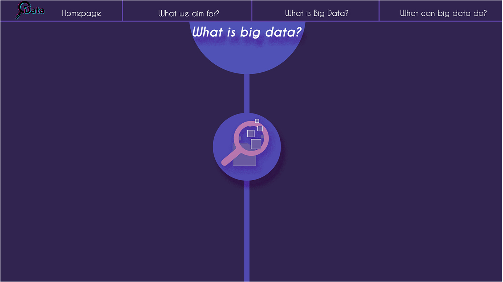
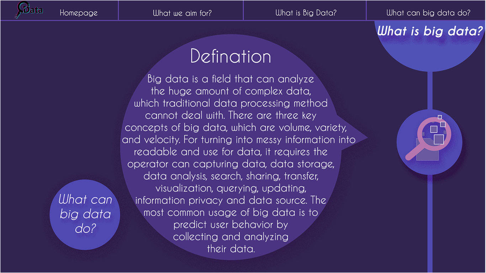
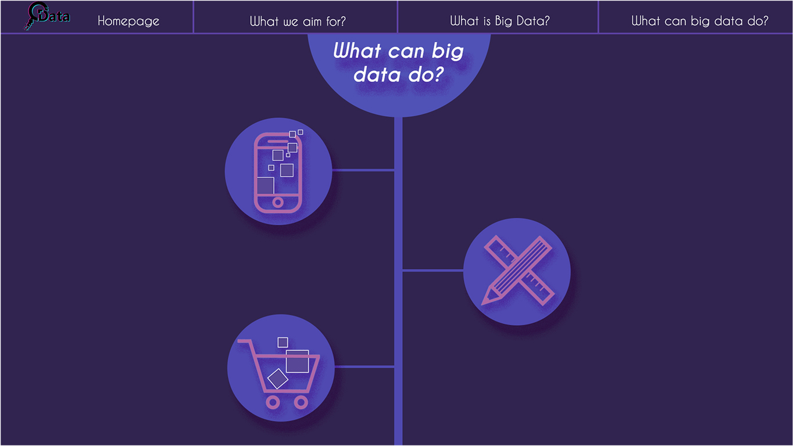
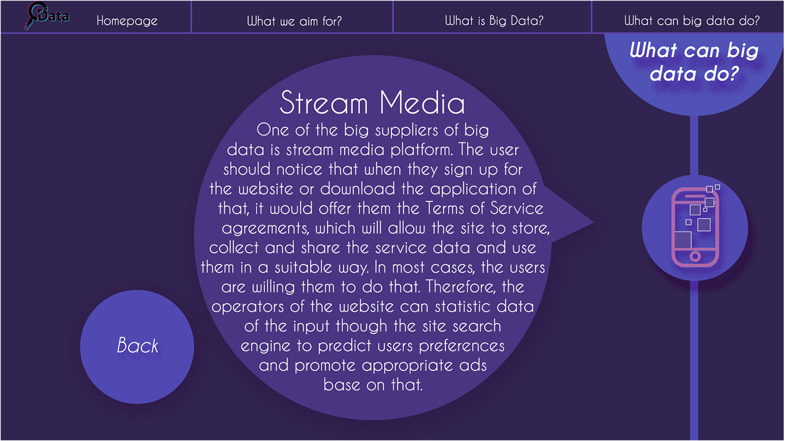
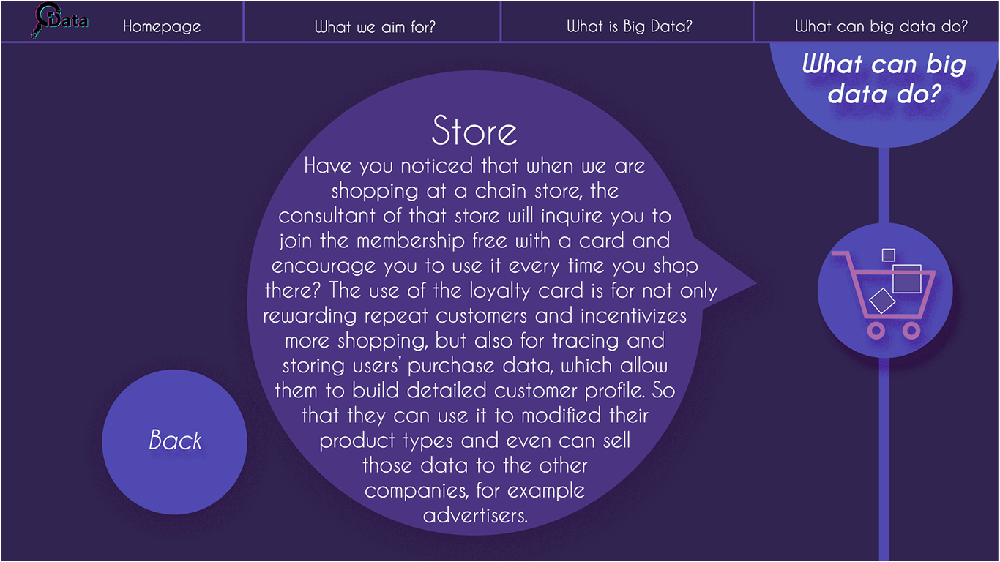
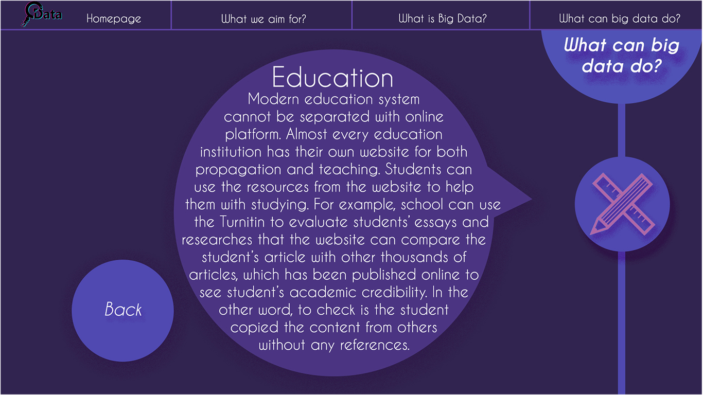

When the User put their mouse on the center circle with logo at the homepage, there is a hover effect that the Logo will split in the middle and then slide to both sides. Then the introduction will located at the circle will appear.
After the user clicked the Start Journey botton at the left bottom cornet, which will lead the user to a new interfact. As the user interacts with the icon, it will slide to the right of the screen, then the bubble with content will appear gradually.
 When the user click the ‘ What is big data’ botton at last page, it will skip into this page, which has similar layout and interactive function with previous page.
   As same as the previous pages, in this page, the user needs to click the icon button in order to lead them into the detail pages. The only differences is that in this part, there are three branches, which allow the user to pick the content, which they are interested in or they can still choose to read them all. At each content page, there is a ‘Back’ button, which allow them to back to the branch page.